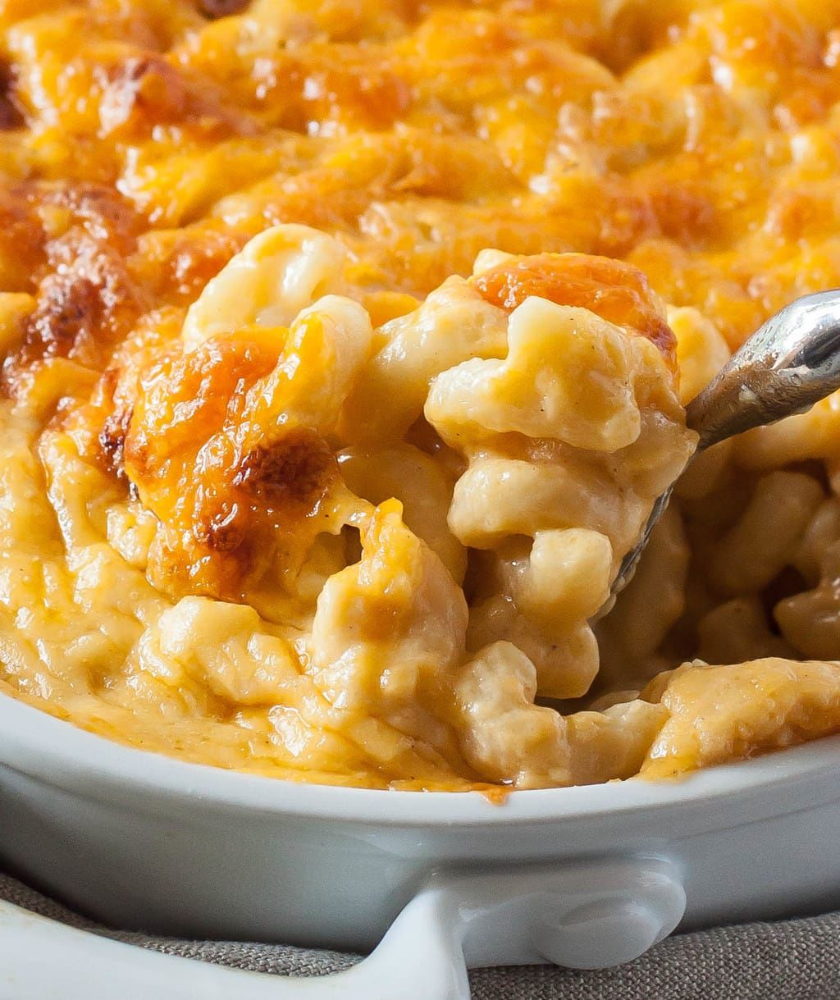

Southern Mac and Chese

Be the king of the cookout
There is macaroni and cheese, and then there is special occasion macaroni and cheese like this one. Unlike most recipes, which start with a roux, this one begins with a milk-and-egg base, which gives the dish an incredibly rich, silky taste. This is a certified banger.
Ingredients
- add Kosher Salt And Black Pepper
- 1 pound Elbow Macaroni
- 2 cups Whole Milk
- 2 Large Eggs
- 4 cups Extra-Sharp Cheddar (shredded, about 16 ounces)
- ½ cup Unsalted Butter (1 stick, melted)
- 2 cups Colby Jack (shredded, about 8 ounces)
Steps
- Make the béchamel sauce:
Melt butter over medium heat in a saucepan. Add in the diced onion, flour, and seasonings and whisk until the roux is golden in color. Slowly whisk in the milk and cream, and bring to a boil. Reduce heat to medium-low, and simmer for about five minutes or until the sauce has slightly thickened.
- Add in the cheese:
Remove the saucepan from the stove, and stir in 3/4 cup of extra-sharp yellow Cheddar cheese and sharp white Cheddar until melted.
- Assemble and bake:
Add in the cooked pasta and remaining cubed Cheddar cheeses. Stir to evenly combine and pour into a 13- x 9-inch baking dish. Bake according to instructions. Sprinkle reserved shredded cheese on top of the dish, and broil for another 2 minutes until melted and a crispy, golden-brown layer has formed on top.
- Bake on a rimmed baking sheet in preheated oven until bubbly and golden, 30 minutes. Remove from oven; increase oven temperature to broil. Sprinkle with reserved shredded cheeses; broil 6 inches from heat until cheeses are melted and golden, about 2 minutes. Remove from oven; cool slightly on a wire rack, about 15 minutes.
Back to Recipes